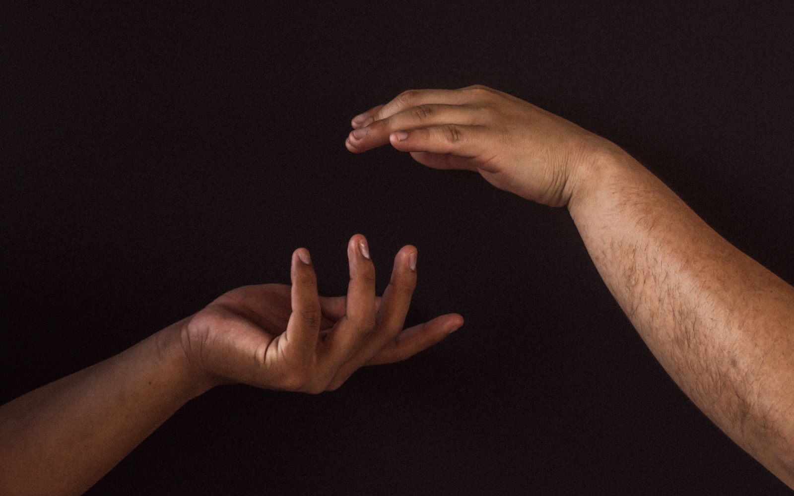

24
Event
Feb 24, 2026
New Student Orientation
Welcome session for incoming students joining the 2026 academic year.

A 1689 Confessional Baptist Seminary
Grace & Truth Theological Seminary trains men and women for faithful ministry through a three-fold biblical method of doctrine, meditation, and mentoring
"The things that you have heard from me among many witnesses, commit these to faithful men who will be able to teach others also." 2 Timothy 2:2"The things that you have heard from me among many witnesses, commit these to faithful men who will be able to teach others also."
2 Timothy 2:2
Academic Programs
01
A one-year foundation for those beginning the call to ministry. 30 units.
More info02
Two years of deeper biblical grounding and pastoral formation. 60 units.
More info03
A four-year degree for rigorous theological study and teaching. 120 units.
More info04
A four-year degree focused on pastoral practice and the work of the ministry. 120 units.
More infoOur Method
Our mission is to prepare men for ministry according to the Bible's own guidelines for training servants of God.
Sound teaching that informs the mind, built on the Scriptures as the supreme authority for knowledge and life. (2 Timothy 3:16–17)
Personal reflection that shapes the heart, cultivating a life of prayer and devotion to Christ. (1 Corinthians 2:6–16)
Faithful training under godly mentors who walk with students toward a lifetime of faithful service. (2 Timothy 2:2; Matthew 28:19–20)
Who We Are
GTS is a Reformed Baptist Seminary holding to the 1689 Baptist Confession of Faith, welcoming applications from all who desire to be servants of God. We award certificates upon completion of course requirements. And through our partners, CBTS & LIT offer Master's degree programs.
Our Mission
Our training program is tailored according to the Bible's guidelines for ministry preparation, which informs our purpose, curriculum, and the quality of our faculty members.

"Admission is open to both male and female, of any age and any religious persuasion."
Your Pathway
The curriculum follows a clear progression, and the credits of each degree can be applied toward the next higher degree.
3 Months · 10 units
Year 2 · 60 units
Year 2 · 36 Hours Credit
Year 4 · 96 Hours Credit
Certificate courses will be applied to the Associate Degree programme upon admission.
Master's degrees awarded through our partner CBTS, whose study methodology GTS has fully adopted.
Faithfully holding the Second London Baptist Confession of 1689 as our statement of faith.
GTS training is offered with full or partial scholarship — removing or drastically reducing financial barriers to faithful preparation.
Student Voices
"The emphasis on doctrine, meditation, and mentoring has shaped not just my knowledge, but my heart for ministry."
"Studying at GTS through the mentoring model gave me practical guidance I carry into pastoral ministry today."
CBTS ongoing training has tremendously transformed my ministry, and I’m grateful to God for this opportunity.
Placeholder quotes — replace with real student testimonials.
Stay Informed
Feb 24, 2026
Welcome session for incoming students joining the 2026 academic year.
May 10, 2026
Prospective students can tour the campus, meet faculty, and learn about our programs.
Aug 28, 2026
Celebrating and graduating the successful completion of the programme.
Sample events — replace with the seminary's actual calendar.
Begin Today
Admission is open to both men and women of any religious persuasion. Full and partial scholarships available.
How application works
Three steps to study at GTS
Submit your application
Complete the registration forms, with your references and letter of recommendation.
Application review
Your application is evaluated by the seminary.
Interview
A member of the GTS board interviews you before admission.